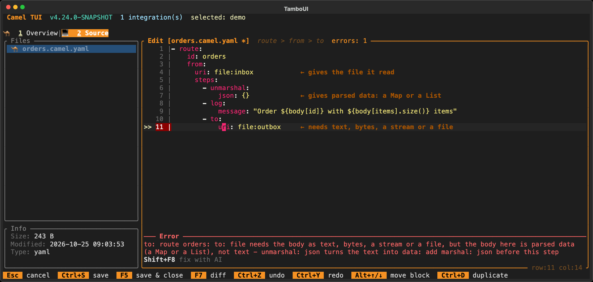
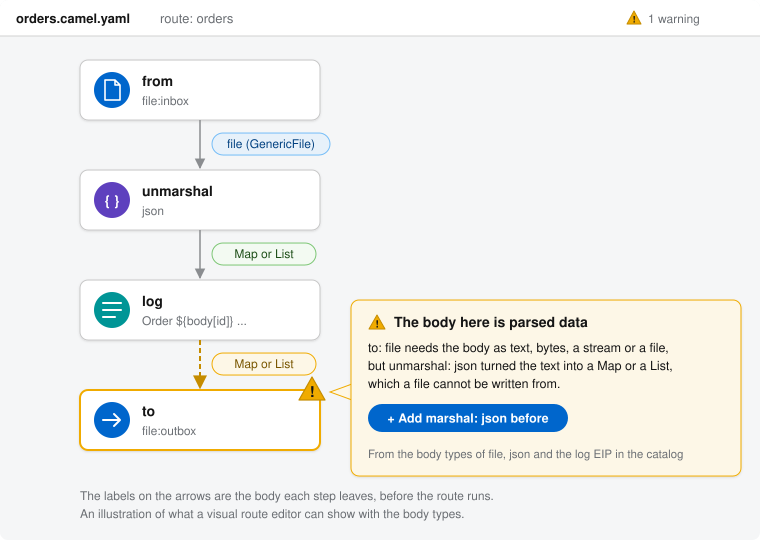

Message Body Types
Available as of Camel 4.24
Every step of a route needs some kinds of message body and leaves one. The file consumer gives the file it read, unmarshal: json turns text into a Map or a List, and the file producer writes text, bytes, a stream or a file, but not a Map. When the body one step leaves is not a body the next step can take, the route fails, but only when a message gets there.
Camel describes these bodies in its catalog, as the body types of each component, data format, language and EIP. They say what each step needs and what it leaves, with its default options and with the options that change it. Tools read them to tell before the route runs what the body is at each step, and where it does not fit.
The body types help you:
-
Find a route that cannot work before it runs. The YAML validator follows the body through the steps of each route, and reports a step that cannot take the body it gets, with a hint of what to add.
-
Know what a step gives without reading its code. The documentation page of each component, data format, language and EIP has a Message Body section, and the Camel CLI and its MCP server show the same.
-
Write routes with AI. An AI assistant that reads the body types writes steps that fit together, such as a
marshalbefore a step that sends text. -
See what the body was when the routes ran. With the message history on, Camel records the body each step has been reached with. A step reached with bodies of more than one kind is a part of the route that needs attention.
How it works, in a picture
Each step has two body types: the bodies it needs, and the body it leaves. A tool lines them up along a route, step by step, before the route runs:
from: file:inbox
│ file the file consumer gives the file it read
▼
unmarshal: json needs text, bytes, a stream or a file ✓
│ Map or List the parsed JSON
▼
log needs any body ✓
│ Map or List log leaves the body as it was
▼
to: file:outbox needs text, bytes, a stream or a file ✗
⚠ the body is a Map or a List: add marshal: json before this stepThe same body types tell what the body is where a route is not wrong: after marshal: json the body is JSON text again, which the file producer writes.
Carriers: the kinds of body
A body type names the carriers of the body: the kinds of Java object it can be in. They are coarse on purpose: a carrier that is right is better than a precise Java type that is wrong.
| Carrier | The body is | Kind at runtime |
|---|---|---|
| No body. |
|
| A |
|
| A |
|
| An |
|
| A file: the |
|
| A single value: a number, a boolean or an enum. |
|
| A |
|
| Another Java object, such as a DOM |
|
| A |
|
| An |
|
Three more words have a meaning of their own:
-
unchanged— the body after the step is the body before it, such as after alogor ato: kafka. -
any— the step takes any body, such as asetHeader. Only for the bodies a step needs. -
unknown— the body depends on what the other system sends, or on a class the user configures. Tools must not guess it. Only for the body after a step.
The kinds are what Camel records at runtime (see Message History): a step reached with bodies of one kind, such as String and byte[], is dynamic but fine; a step reached with a payload for some messages and data for others needs attention.
Sides: what a step needs and what it leaves
The body types of a model are a set of sides. A side that is not listed is not known.
| Model | Side | The body |
|---|---|---|
Component |
| The body of the message the consumer creates: what a |
| The bodies a consumer that answers the caller can reply with: what the route can end with. | |
| The bodies the producer can send or write: what a | |
| The body after the producer. | |
Data format |
| The bodies the data format can marshal. |
| The body after | |
| The bodies the data format can unmarshal. | |
| The body after | |
Language |
| The bodies the expressions of the language can read. |
| The result of an expression. | |
EIP |
| The bodies the EIP needs, such as text for |
| The body after the EIP. | |
| The body the steps of the EIP start with, such as each part for |
Examples
A step that cannot take the body
This route reads JSON files, parses them, and writes them to another directory:
- route:
from:
uri: file:inbox
steps:
- unmarshal:
json: {}
- to:
uri: file:outboxThe file consumer gives the file (consumerOut is file), unmarshal: json leaves a Map or a List (unmarshalOut), and the file producer needs text, bytes, a stream or a file (producerIn). So the validator reports the to:
to: file needs the body as text, bytes, a stream or a file, but the body here is parsed data (a Map or a List), not
text - unmarshal: json turns the text into data: add marshal: json before this stepThe source editor of the Camel CLI checks a file when you save it, and does not save a YAML file with a problem. The to line is marked, and the Error panel says what is wrong, with Shift+F8 to fix it with AI (the notes on the right were added for this page):

With a marshal before it, the body is JSON text again, which the file producer writes:
- route:
from:
uri: file:inbox
steps:
- unmarshal:
json: {}
- marshal:
json: {}
- to:
uri: file:outboxOptions change the body
The body after a step can depend on its options. The xslt producer leaves the result as text, unless its output option says otherwise:
"producerOut": {
"carriers": [ "text" ], "javaType": "java.lang.String", "dependsOn": [ "resultHandlerFactory" ],
"byOption": [
{ "option": "output", "value": "bytes", "carriers": [ "bytes" ], "javaType": "byte[]" },
{ "option": "output", "value": "DOM", "carriers": [ "pojo" ], "javaType": "org.w3c.dom.Document" },
{ "option": "output", "value": "file", "carriers": [ "file" ], "javaType": "java.io.File" } ],
"description": "The result of the transformation" }With output=bytes the body is a byte[]. With a resultHandlerFactory the factory decides the body, which the catalog cannot know, so it is not known.
An option that names the class of the body
Some options name the class the result is converted to: the resultType of a language, the unmarshalType of a JSON data format, the type of convertBodyTo, or the outputClass of sql for one row. When such an option is set, the body is an object of that class, or null:
- route:
from:
uri: direct:order
steps:
- setBody:
simple:
expression: "${header.quantity}"
resultType: java.lang.Integer
- to:
uri: sql:select * from orders where id = :#id
parameters:
outputType: SelectOne
outputClass: com.acme.OrdersetBody leaves the result of its expression, and with resultType that is an Integer, a value. The sql producer leaves a List of rows by default, and with outputType=SelectOne and outputClass one com.acme.Order, or null when there is no row.
EIPs
The body after an EIP is often the body of something else: marshal leaves what its data format writes, to what the producer of its endpoint leaves, and setBody the result of its expression. The catalog says so with from, instead of copying the body types of every data format, component and language:
"eipOut": { "from": "marshalOut", "dependsOn": [ "variableReceive" ],
"description": "What the data format writes. With variableReceive the result goes into the variable, and the body stays as it was" }An EIP with steps of its own also says what they start with. The steps of a split start with each part, and after it the body is as it was before the split:
"eipOut": { "carriers": [ "unchanged" ], "dependsOn": [ "aggregationStrategy" ],
"description": "The body as it was before the split, unless an aggregationStrategy is set" },
"eipSteps": { "carriers": [ "unknown" ],
"description": "Each part of what the expression gives, such as an element of a List or a line of text" }Tooling
Documentation
The page of each component, data format, language and EIP has a Message Body section with a row per side, which is generated from the catalog.
Camel CLI and its MCP server
camel catalog doc prints the same table for a component, data format, language or EIP, such as camel catalog doc xslt or camel catalog doc eip:split. The camel_catalog_doc tool of the MCP server gives each side as a line of text, so an AI assistant reads them with the options:
text (java.lang.String). The result of the transformation. With output=bytes: bytes (byte[]); output=DOM: pojo
(org.w3c.dom.Document); output=file: file (java.io.File). Not known when resultHandlerFactory is setYAML validator
camel validate source follows the body through the steps of each route with the body types, and reports a step that cannot take the body it gets (see Validation). Where the catalog does not know the body, such as after an HTTP consumer, it says nothing, unless a running integration has shown what the body is.
Asking an AI assistant
An AI assistant with the MCP server of the Camel CLI can answer "is something wrong with my route?". It validates the file with the camel_validate_source tool, which follows the body with the body types:
You: Is something wrong with my route in orders.camel.yaml? The files never show up in outbox.
Assistant: (calls camel_validate_source on orders.camel.yaml)
{"valid": false, "errors": ["Line 8: to: to: file needs the body as text, bytes, a stream or a file,
but the body here is parsed data (a Map or a List), not text - unmarshal: json turns the text into
data: add marshal: json before this step"]}
Yes. unmarshal: json turns each file into a Map (or a List for a JSON array), and the file producer
cannot write a Map, so the exchange fails at the to step and nothing reaches outbox. Add
marshal: json before the to to write the JSON again. If the route only moves the files, remove the
unmarshal instead, as the file consumer gives the file as it is.The assistant can also read the body types of a step with camel_catalog_doc, such as what unmarshal: json leaves with useList, and it validates a route before it writes the file. In the source editor of the Camel CLI, Shift+F8 asks the AI of the Camel CLI to fix the problem of a line.
In a visual route editor
As the body types are in the catalog, a visual route editor can show them too: the body on each arrow, and a warning on the step that cannot take it, with the step to add. An illustration of the route above:

At runtime
With the message history on, such as with camel run --dev, Camel records the types and kinds of the bodies each step has been reached with:
-
Message History explains the kinds, the
BodyTypeRegistry, thebody-typedev console and the JMX attributes. -
camel cmd route-structureshows them per step (see Diagnostics), as do the diagram and the source editor of the Camel CLI. -
The route coverage report of the Camel Report Maven Plugin shows the body types the tests reached each step with, and can fail the build on a step reached with bodies of more than one kind.
For example, the route coverage report of tests that sent two messages, where only one was parsed before the to:
mvn camel-report:route-coverage -Dcamel.bodyTypes=true Line # Count Route Body types
------ ----- ----- ----------
3 2 from
4 2 unmarshal String
7 2 to LinkedHashMap | String (data and payload)The to has been reached with a LinkedHashMap (data) by one message and a String (a payload) by the other, so it works for some messages only. The body types in the catalog tell this before the route runs; the ones recorded at runtime show what the messages really brought.
Declaring body types
A component declares its body types with the @BodyTypes annotation on its endpoint class, a data format and a language on their class, and an EIP on its model class in camel-core-model. That is also where the EIPs that other modules implement are declared, such as circuitBreaker. A subclass does not have the body types of its superclass, as it may change the body:
@BodyTypes(consumerOut = @BodyType(value = Carrier.FILE, description = "The file as read ..."),
producerIn = @BodyType({ Carrier.TEXT, Carrier.BYTES, Carrier.STREAM, Carrier.FILE }),
producerOut = @BodyType(Carrier.UNCHANGED))
@UriEndpoint(firstVersion = "1.0.0", scheme = "file", ...)
public class FileEndpoint extends GenericFileEndpoint<File> {The values come from the code that sets the body. The build checks that:
-
each side belongs to the kind of model; a consumer-only component has no producer sides;
-
the options a side names exist, and a value of an option is one the option can have;
-
unchangedandunknownare only on the body after a step, andanyonly on what a step needs; -
fromnames a side the body can come from, and a side withfromhas no carriers of its own; -
a
javaTypeOptionis an option of the body after a step that the side does not also depend on.
The runtime body types the message history records are checked against them in tests, such as for the EIPs of core.
Reference: the JSON of the body types
This section is for the tools, and the AI assistants, that read the catalog.
The JSON of a component, data format, language or EIP in the catalog has a bodyTypes object next to its options, with an object per side. Each side has these fields; a field that does not apply is left out:
| Field | Type | Meaning |
|---|---|---|
| array of strings | The carriers of the body: one, or several when the body can be any of them. Left out for a side with |
| string | The Java type of the body, when it is always of this type. |
| string | The format of the payload, when it is always the same: |
| array of strings | The options the body depends on. The side holds while they keep their default values. When the step sets one, only a |
| array of objects | The body for a value of an option: |
| string | The option that names the class of the body, such as |
| string | For an EIP, the side of another model the body is: |
| string | What to know about the body, in a sentence. |
Reading a side for a step
To know the body a step leaves, or the bodies it needs, read its side with the options the step sets, in this order:
-
No side: not known.
-
A side with
from: when the step sets an option ofdependsOn, not known. Otherwise, read the sidefromnames on the model the step uses (the language of its expression, its data format or its endpoint), with the options of that model.stepsis the body the steps of the EIP end with. -
An option the side names whose value is not known before the route runs (a
{{placeholder}}or a${expression}), or an option the step does not set but that can be set elsewhere, such as on the component: not known. -
An option of
dependsOnthe step sets: thebyOptionentry for that value says the body. When it has ajavaTypeOptionthe step sets, the body is an object of that class. Without such an entry: not known. -
The
javaTypeOptionof the side, when the step sets it: an object of the class it names, or null. It wins over thebyOptionentries of other options. -
The
byOptionentries for the values the step sets: their carriers (or the class of theirjavaTypeOption). When two of them say different bodies: not known. -
Otherwise: the carriers of the side.
unknownis not known, andunchangedis the body before the step.
The values of an option compare in any case, and in any style of an enum constant, as Camel takes them: convert-to-json, convertToJson and CONVERT_TO_JSON are one value.
The carrier of a class that a javaTypeOption names follows the class: String is text, byte[] is bytes, an InputStream or a Reader is stream, a File or a Path is file, a number, a boolean or a character is value, a Map is map, a Collection or an array is list, an Iterator is iterator, Object is unknown, and any other class is pojo. The short names Camel takes, such as String and int, count too.
Java API
The models of camel-catalog have the body types, and BodyTypeResolver of camel-tooling-model reads a side for the options of a step, by the rule above. The YAML validator uses it:
CamelCatalog catalog = new DefaultCamelCatalog();
BodyTypeModel out = catalog.componentModel("xslt").getBodyType(BodyTypeModel.PRODUCER_OUT);
out.getCarriers(); // [text]
out.getJavaType(); // java.lang.String
BodyTypeResolver.Resolved bytes = BodyTypeResolver.resolve(out, Map.of("output", "bytes"), Set.of());
bytes.carriers(); // [bytes]
BodyTypeModel.carrierOf("java.util.Map"); // map